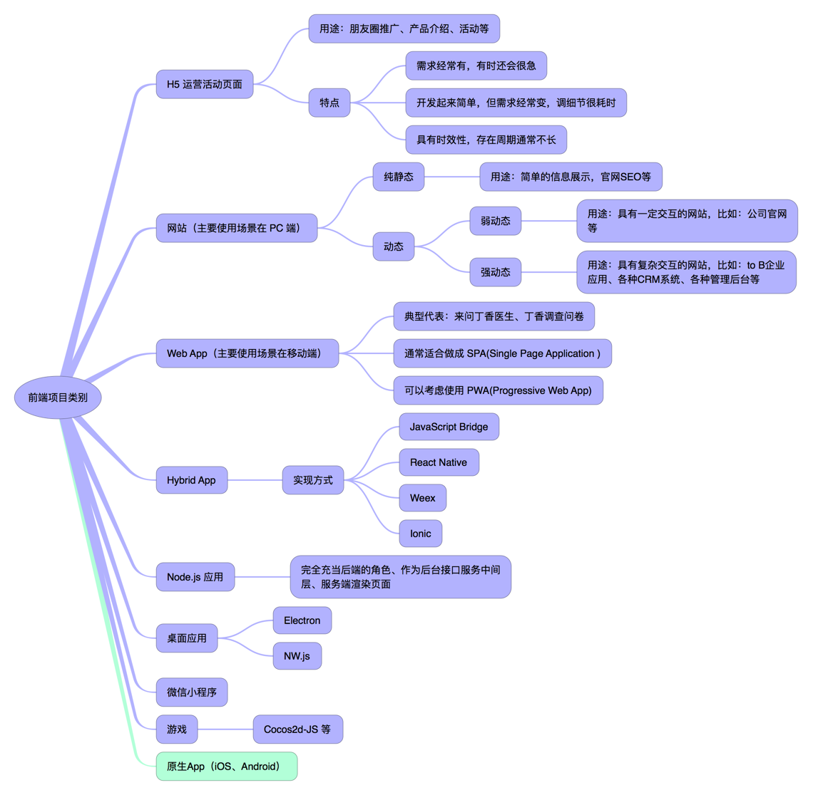
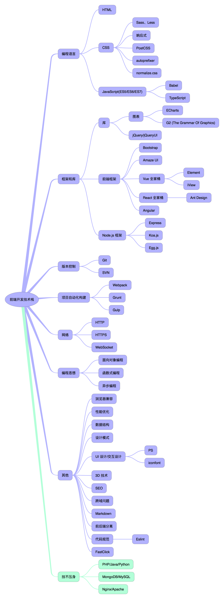

早就想以“我眼中的前端”为题写一篇文章了，可却迟迟没有动笔。因为总是觉得冥冥之中自己还没有触及到前端的边界。
今天是 2017 年的第一季度最后一天，元旦之后开始参与的来问丁香医生项目重构版本发布上线并趋于稳定，参与的丁香医生 App v6.0 成功上线且后续版本迭代开发顺利，最近几天大概了解到第二季度自己会参与其中的事情，走在回家路上时突然想到：尝试着去写一下吧！如果写的不好，那就继续沉淀一段时间再写一次。
第一次正式接触前端相关的知识，是在大二的时候。那时候有一门专业课，名字大概叫做企业级系统设计。授课内容主要是 J2EE 相关的内容。依稀记得老师讲到 JSP 时，对我们说 HTML、CSS 这些内容很简单的，你们课后回去自己看一下就好了。当时的我，从“冰冷的” VC 6.0 编译代码后黑乎乎的命令行窗口逃离没有多久，还沉浸在遇到 Eclipse 的喜悦之中，对前端产生的第一印象是：简单。当看到自己写的页面，在浏览器中真真切切的按照自己的意愿展示出来时，对前端产生的印象是：有趣。
于是乎就选修了学校的公选课：网页设计与制作，在那里学习到了 PS 的一些基本操作。再后来在 QQ 空间看到学校有一个叫做工大开发者联盟的社团，将要举办培训班，便去试听了前端和安卓两个班，最终选择了前端方向，在这期间自己对 JavaScript 这门语言有了新的认识。
大三下学期找实习工作时，来学院宣讲的几乎都是招聘 Java、C++ 的，加上自认为 Java 学的比 C++、C# 好一些，便做了一份应聘 Java 实习生的简历。就在笔试和面试了几家公司等结果时，学院来了一家创业公司进行宣讲。当海归、创业、微软谷歌背景、硅谷从业经历、H5、云平台这些词从宣讲者口中说出来时，感觉自己已经被点燃了：这就是我想去的公司啊！投简历、笔试、面试一切进行的都还顺利。签过实习协议后，公司给发了一封邮件，要求入职前去深入学习 JavaScript，并推荐了《JavaScript 高级程序设计》、《JavaScript 权威指南》等学习资料，正是这段期间自己第一次系统的学习了JavaScript。2014 年 8 月 23 日，一个朝气蓬勃的少年，踏上了前端开发的征程。
从最开始接触 HTML 至今，一路跌跌撞撞近五年的时间了。下面尝试从一些维度来写一写“我眼中的前端”。
关于前端项目类别和前端开发技术栈两个部分，展开说的话可以写很多，由于希望赶在第二季度到来之前写完这篇文章，加之感冒了状态不佳，遂暂时放两张思维脑图。今后会单独写写这两个话题。
前端项目类别

PS. 把 App 开发也列为了前端，希望做 iOS 开发和 Android 开发的伙伴们不要介意。我知道原生 App 开发的水是很深的，这方面的知识有机会我还是要学习一个。不过，在我的认知中，一切跟用户直接打交道并依赖于服务端数据供给的软件应用，都可以被称为前端。
前端开发技术栈

PS. 有些我认为如果不出意外的话，不会再在新的项目中使用的前端技术被我略掉了。
前端开发过程中的一些挑战
写到这一点时，我的思绪有些停顿。做了这么久的前端开发，目前觉得稍可以算上有点挑战的事情有：
- 数据(应用状态)的管理
- 浏览器兼容
前者指的是那种“前端很重”的应用，比如 Teambition 这种；后者说其有挑战，主要是因为这是一件充满不确定性且永远做不完的事情。
目前工作中觉得有挑战的几件事：
- 前端项目异常的监控、上报与通知
- Hybrid 应用中前端资源的分发和增量更新
- H5 运营活动的工程化
需要自己不断探寻边界、去挑战的方向：服务端开发、运维等。
写到这里，透露出我关于前端的另一个认知：如果以整个软件项目的角度来衡量，除了最贴近数据库那一层的很基础很“底层”的接口外，业务级别的接口封装、用户系统的设计与实现、整个服务端的安全和运维等工作，都可以说为是前端领域的工作内容。
前端的本质
这篇文章丝毫没有冒犯移动端开发和服务端开发之意。
我认为现在人们常提起的前端开发、移动端开发、服务端开发都只是软件工程的一个细分，它们彼此需要紧密配合，并肩作战，最终才可以良好的支撑各种商业行为的运作。从服务端获取到数据的那一刻起，前端便有了生命力。前端的使命就是控制数据准确的流动，尽可能给用户最棒的使用体验。而一旦有了数据的流动，就会出现不同维度的复杂度，此时就需要前端开发者撸起袖子，奋勇拼搏，最终交上一份让自己、团队都满意的答卷。
前端的本质应该是什么呢？暂时我还给不出准确的答案。暂且引用一句去年在阿里 D2 大会上看到的一句话吧：链接商业、设计、计算能力，为用户提供专业的人机交互体验。
前端工程师应该具备的素质
写了这么多，那么我眼中的前端工程师，应该具备怎样的素质呢？
- 扎实的技术功底
- 良好的沟通能力
- 良好的表达能力
- 较强的团队合作意识
- 冷静、快速解决问题的能力
- Owner 的心态
- 开阔的技术视野
- 有一定的技术追求
- （为人）可信赖的（负责的项目）可依赖的
还有想写的吗？
前端是一个太宽泛的话题了。之后或许会尝试把这篇文章中的某一个点拎出来，单独来谈一谈。行文间流露着匆忙之意，不过也到此为止吧。
再写一句话作为结束语吧：世上本没有前端，做的人多了也就。。。
写于 2017 年 3 月 31 日夜